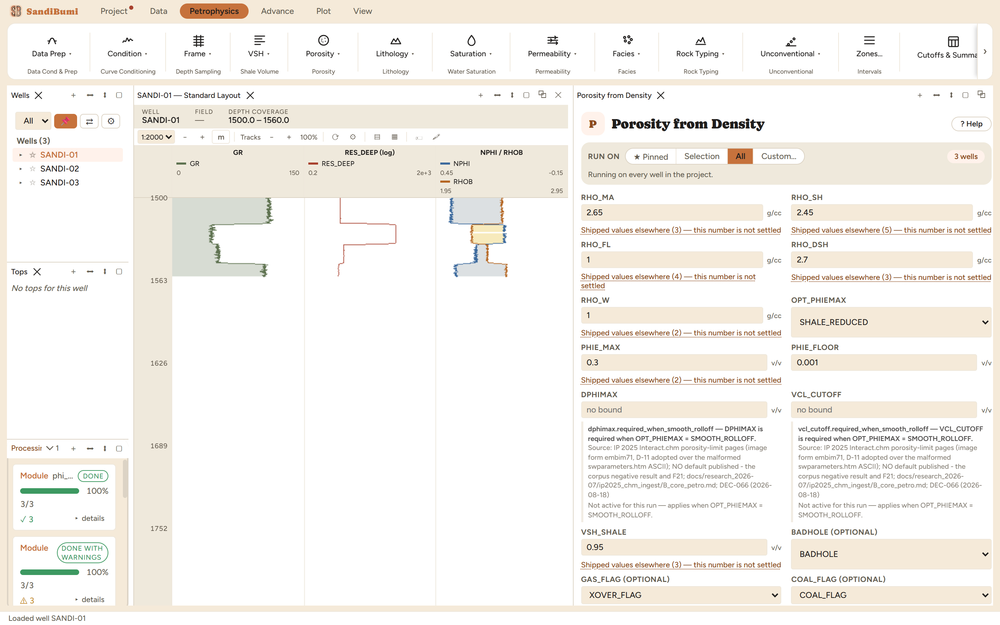

Density porosity with shale correction: the workhorse single-log porosity,
and on most clastic studies the porosity that ships. The density log's
response is the closest to a linear mixing law of any porosity tool, so when
the hole is good and the matrix density is right, this is the number the
others are judged against.
The physics
Effective porosity reads the density log between the matrix and fluid
points, then subtracts the shale term; total porosity adds the shale's own
porosity back through PHIT_SH (built from the dry-shale and water densities).
Above the VSH_SHALE threshold (0.95 shipped) a sample is treated as shale
outright: PHIE 0, PHIT = PHIT_SH. The limited outputs then pass through the
PHIE limiting method (SHALE_REDUCED shipped, with a hard MAXIMUM and a
smooth roll-off available), while the unlimited PHIE_DEN/PHIT_DEN companions
keep the raw arithmetic for QC.
The picks and why
RHO_MA 2.65 g/cc (shipped): the quartz-sand matrix density,
carried identically by every installed tool's mineral table; the pane's
source note lists them. A calcareous or heavy-mineral sand needs its own
value, and the variant below shows what that decision is worth.
RHO_SH 2.45 g/cc: the median density of SANDI-01's shale
population (GR ≥ 112), read from this dataset, not a book.
RHO_FL 1.0 g/cc (shipped): fresh filtrate in the invaded zone
the density tool reads.
Step by step
Run VSH first; the shale correction consumes it.
Open Petrophysics ▸ Porosity ▸ Porosity from Density. The RHOB
input resolves the corrected curve if the Prep corrections ran.
Enter the matrix and shale densities with their sources in the custody
line, and press Run Porosity from Density.
The matrix density is a lithology statement; the pane's source
note lists the shipped agreement behind 2.65.
Reading the result
3 clean. Run live: median PHIE 0.1627, median PHIT
0.2024. The gap between them is the shale term doing its work in a
section whose median VSH is 0.54.
SELECT round(median(value), 4) FROM computed_curves
WHERE curve_name = 'PHIE_DEN' AND NOT isnan(value)
The sensitivity that matters: RHO_MA moved from 2.65 to 2.68 (a slightly
calcareous sand) lifts the medians to 0.1731 / 0.2129: about one
porosity unit for three hundredths of a gram. Heavier assumed matrix reads
more porosity, in proportion to the endpoint move over the matrix-fluid
contrast. On a 20%-porosity sand that is a five-percent relative error from
a lithology guess, which is why the matrix density is cited, not
defaulted-and-forgotten.

Three clean wells; the medians above are the section's answer
under the cited endpoints.
QC and pitfalls
Density porosity is hostage to hole quality. Feed the hole-corrected
density (Prep book), and mask on the bad-hole flag: a washout reads as
porosity with nothing else to say so.
Crossplot PHIE_DEN against a neutron or sonic porosity in clean
intervals: a constant offset points at the matrix or fluid endpoint, a
VSH-correlated offset points at the shale term.
Gas lowers the density log's apparent density and inflates density
porosity; run the gas correction (Prep book) or interpret gas zones with
the crossover-aware methods.